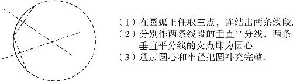
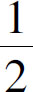
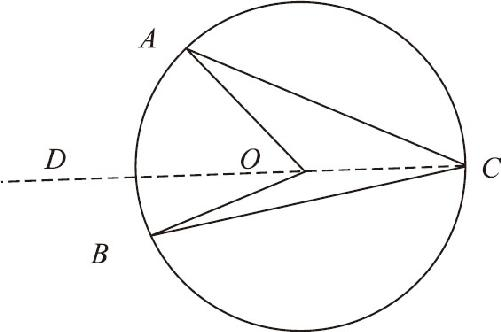

几何学不是无所不能的．例如：要通过尺规作图的方式对一个已知角进行三等分就是绝不可能的，这曾是著名的几何学三大难题之一．那么几何学的三大难题分别是什么呢？
①化圆为方的问题；②三等分角的问题；③立方倍积问题．第一个问题化圆为方，是说求一个正方形，使得它的面积等于给定的一个圆的面积．第二个问题，是说把任意一个给定的角平分成三等分，不是说所有的角都不能三等分，像180°、90°的这些角还是很容易三等分的．但是，如果题目随便给定一个角度要求我们三等分，那就做不到了．第三个问题立方倍积，是指给定一个固定边长的立方体，让你求一个新的立方体，使得它的体积等于原立方体体积的2倍．这三个问题曾经难倒了无数的数学家．那么，后来这些问题怎么办了呢？和我们提到的第五公设的问题一样，他们都被证明是不能通过尺规作图实现的．当然，通过别的办法还是可以实现的．
那么，这些问题真的无法解决吗？它们无法实现的这个结论又是通过什么方法证明的呢？其实，它们都是通过把几何问题转换为代数问题，再通过代数方法证明的．由于过程非常复杂，在这里就不给出证明了．不过我们仍然可以仔细分析一下，能够通过尺规作图解决的所有问题都具有哪些特征：几何学能做线段的加减乘除，如果我们把原来的线段视为整数的话，就相当于通过几何作图画出了整数和分数．但是对于角呢，我们却只能做加减，不能做乘除，其实这个问题的本质，和化圆为方的问题完全相同．如果我们能够把一个角三等分，就相当于把这个角对着的圆弧三等分，问题的关键就在于，没办法把圆弧三等分，而之所以如此，又是因为通过尺规作图根本就不能画一段圆弧，让它等于已知线段的长度．同样也不能画一条线段等于圆弧的长度，因为直线和圆弧各自遵循着不同的规律．在此讨论一下圆弧的特点：
圆弧是圆的一部分．如果可以确定一条曲线是圆弧的话，就可以通过尺规作图的方法，找出它的圆心和半径，进而把这一小段圆弧补充为完整的圆．就和线段延长为直线的道理是一样的，只要看到一小截线段，就能沿着这个线段的方向，把它的两端无限延长，得出一条直线．根据一小段圆弧画出整个圆，显然不能通过直尺直接延长来实现，那应该怎么做呢？
办法很简单：由于圆心距离圆弧上每一点的距离都等于半径，所以我们就可以在一段圆弧上任意取三个点，只要求出到这三个点的距离相等的一个点就可以了．这个问题是我们刚刚处理过的：由于线段垂直平分线上的点到两端点的距离相等，所以我们可以从三个点中任意连结两条线段，然后作出两条线段的垂直平分线就可以了，两条垂直平分线的交点，到这三个点的距离相等，因此这个点就是圆弧的圆心．由于圆心到任意一点的距离都等于半径，所以只要确定了圆心，半径也就得到了．求得圆心和半径以后，就可以用圆规画出缺失的那一部分圆弧，也就可以把任意一小段圆弧补充为一个完整的圆形．（如图10－1所示）

图10－1
上述操作意味着：任何一段圆弧都有一个确定的半径，这是圆弧的第一个基本特征．如果把圆弧的两个端点和圆心连接起来，就得到了两条半径，而这两条半径之间的夹角就叫作圆心角，圆心角就是半径旋转过的角度．圆心角就是圆弧的第二个特征．从这个意义上说，可以把圆形理解为半径绕着圆心转了360°得到的结果．正因为如此，圆形是高度对称的图形，它有无数条对称轴，圆的任意一条直径所在的直线都可以当作它的对称轴．那么，既然半径可以转动，圆心角是不是也可以转动呢？如果夹着圆心角的两条半径同时旋转，那么不管它旋转到什么位置，圆心角对着的圆弧长度始终是不变的，这就是圆弧的另一个基本性质：在圆的内部，相等的圆心角对着的圆弧同样是相等的，反过来说，等长的圆弧对应的圆心角同样相等．
如果我们把圆弧上的两个端点，和它对面圆周上的任意一点连起来，就又会产生一个新的角，这个角叫作圆周角．圆周角和圆心角有什么关系呢？如图10－2所示：对于已知圆弧AB 而言，O 点是它的圆心，因此∠AOB 就是它的圆心角．C 点是另一侧圆弧上的任意一点，因此∠ACB 就是它的圆周角，要研究圆心角和圆周角的关系，离不开半径的帮助，因此，我们连结CO 并延长至D 点，就会发现：
∵OA ＝OC （半径长度相等），
∴∠OAC ＝∠OCA （等边对等角）．
又∵∠AOD ＝∠OAC ＋∠OCA （外角定理），
∴∠AOD ＝2∠OCA （等量代换）．
同理可证：∠DOB ＝2∠OCB ．
∵∠AOB ＝∠AOD ＋∠DOB （整体等于部分之和），
∴∠AOB ＝2∠OCA ＋2∠OCB ＝2∠ACB ，
即∠ACB ＝

∠AOB ．
图10－2
通过上述证明过程我们发现：圆周角等于圆心角的一半．由于C 点是任取的外侧圆弧上的一点，因此，同一段圆弧对应的所有圆周角全部相等，其大小等于圆心角的一半．而这就是圆弧的最后一个性质．